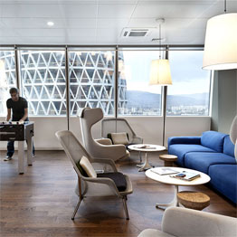
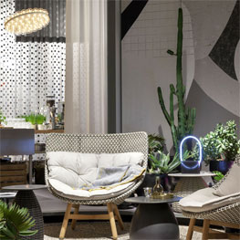

Cozy Contemporary Studios by divan
120 Allen Street located on the Lower East Side of Manhattan and is comprised of sixteen furnished
studios and four furnished apartments with commercial space at grade. Grzywinski+Pons designed the
building, the interiors, and much of the furniture. Located on an infill lot in a classically gritty LES
tenement block, the property - while very narrow is block-through and as such has frontage on both Allen
and Orchard Streets. To accommodate the allowable floor area on such a small footprint, we bifurcated
the mass on the north-south axis creating a slender ten-storey tower on the Allen Street side. (more...)

Paysafe Office Space in Sofia by divan
New office space of payment processing company Paysafe located in Sofia, Bulgaria was designed by DIVAN.
The most intriguing task when designing the new Paysafe office space inSofia was to make a combination
between a calm working environment with 600 workstations retain the portliness of the company having in
mind that it is the second worldwide largest dealing with online payments and yet get away from the
boring open space office. We took an advantage of the different products/services Paysafe offer -
Skrill, Netteler, Paysafecard and incorporated their corporative color identity as colorful accents on
the three different floors space is located. (more...)

Das Haus - Interior on Stage Installation by divan
The Das Haus - Interiors on Stage
installation simulates a residential house at the international
furnishing show imm Cologne. The trade fair erects an open stage measuring approximately 240 sq.m in the
middle of Hall 2.2 (Pure Editions) for this. Its layout and furnishings change each year in line with
the plans of a new designer nominated by imm cologne. As the guest of honour, he or she decides on the
architectural elements and also the interior and outdoor decor. (more...)